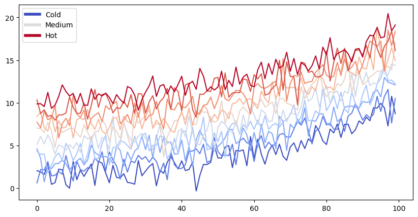

# Fixing random state for reproducibilitynp.random.seed(19680801)N=10data=[np.logspace(0,1,100)+np.random.randn(100)+iiforiiinrange(N)]data=np.array(data).Tcmap=plt.cm.coolwarmrcParams['axes.prop_cycle']=cycler(color=cmap(np.linspace(0,1,N)))frommatplotlib.linesimportLine2Dcustom_lines=[Line2D([0],[0],color=cmap(0.),lw=4),Line2D([0],[0],color=cmap(.5),lw=4),Line2D([0],[0],color=cmap(1.),lw=4)]fig,ax=plt.subplots(figsize=(10,5))lines=ax.plot(data)ax.legend(custom_lines,['Cold','Medium','Hot'])
<matplotlib.legend.Legend at 0x7efcc72d8640>

1.1.1.1. Celdas no ejecutables pero numeradas y con formato#
Listing 1.1 This is my
multi-line caption. It is pretty nifty ;-)#
---------------------------------------------------------------------------NameErrorTraceback (most recent call last)
CellIn[3],line1----> 1print(val_a)NameError: name 'val_a' is not defined
foriiinrange(40):print(f"this is output line {ii}")
this is output line 0
this is output line 1
this is output line 2
this is output line 3
this is output line 4
this is output line 5
this is output line 6
this is output line 7
this is output line 8
this is output line 9
this is output line 10
this is output line 11
this is output line 12
this is output line 13
this is output line 14
this is output line 15
this is output line 16
this is output line 17
this is output line 18
this is output line 19
this is output line 20
this is output line 21
this is output line 22
this is output line 23
this is output line 24
this is output line 25
this is output line 26
this is output line 27
this is output line 28
this is output line 29
this is output line 30
this is output line 31
this is output line 32
this is output line 33
this is output line 34
this is output line 35
this is output line 36
this is output line 37
this is output line 38
this is output line 39
# Simulate some data and bootstrap the mean of the dataimportnumpyasnpimportpandasaspdimportmatplotlib.pyplotaspltn_points=10000n_boots=1000mean,sd=(3,.2)data=sd*np.random.randn(n_points)+meanbootstrap_indices=np.random.randint(0,n_points,n_points*n_boots).reshape((n_boots,n_points))# Calculate the mean of a bunch of random samplesmeans=data[bootstrap_indices].mean(0)# Calculate the 95% confidence interval for the meanclo,chi=np.percentile(means,[2.5,97.5])# Visualize the histogram with the intervalsfig,ax=plt.subplots()ax.hist(means)forlnin[clo,chi]:ax.axvline(ln,ls='--',c='r')ax.set_title("Bootstrap distribution and 95% CI")# And a wider figure to show a timeseriesfig2,ax=plt.subplots(figsize=(6,2))ax.plot(np.sort(means),lw=3,c='r')ax.set_axis_off()# Store the values in our notebookglue("boot_mean",means.mean(),display=False)# numeroglue("boot_clo",clo,display=False)# numeroglue("boot_chi",chi,display=False)# numeroglue("boot_fig",fig,display=False)# Plotglue("sorted_means_fig",fig2,display=False)# Plot# Dataframesbootstrap_subsets=data[bootstrap_indices][:3,:5].Tdf=pd.DataFrame(bootstrap_subsets,columns=["first","second","third"])display(df)glue("df_tbl",df,display=False)
```{glue:figure} boot_fig
:figwidth: 300px
:name: "fig-boot"
This is a **caption**, with an embedded `{glue:text}` element: {glue:text}`boot_mean:.2f`!
```
Fig. 1.1 This is a caption, with an embedded {glue:text} element: 3.00!#
Here is a {ref}`reference to the figure <fig-boot>`
| name | plot | mean | ci |
|:-------------------------------:|:-----------------------------:|---------------------------|---------------------------------------------------|
| histogram and raw text | {glue:}`boot_fig` | {glue:}`boot_mean` | {glue:}`boot_clo`-{glue:}`boot_chi` |
| sorted means and formatted text | {glue:}`sorted_means_fig` | {glue:text}`boot_mean:.3f` | {glue:text}`boot_clo:.3f`-{glue:text}`boot_chi:.3f` |